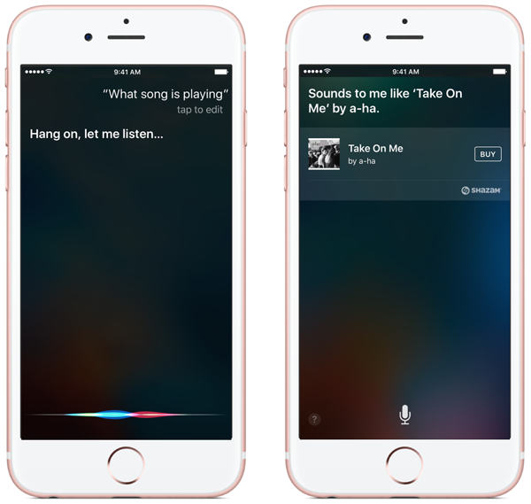

Siri
Siri enables you to use your voice to send messages, schedule meetings, place phone calls, and more. Siri uses your location, contacts, and contact relationships to provide intelligent, personal assistance.

Siri is available on most recent iOS devices. It requires an Internet connection.
Practice
Follow these steps on your iOS device to use Siri:
- Hold down the Home button.
- Wait for the tone, and then ask a question or tell Siri what to do. Speak naturally.
- Listen to what Siri says and respond accordingly. Siri might ask for clarification.
If you activate Raise to Speak, you can activate Siri by moving the device to your ear.
- Any app can activate Raise to Speak, including the Home screen or the Lock screen.
- If you use Raise to Speak, the on-screen keyboard triggers dictation.
- Raise to Speak might not work with accessories.
For more information about Siri, refer to knowledge base article HT204389, "Use Siri on your iPhone, iPad, or iPod touch"
Siri might not be available in all languages or in all areas. Cellular data charges might apply. Visit the iOS Feature Availability page at http://www.apple.com/ios/feature-availability/.